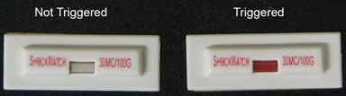

Illustration 2: Triggered Shock Sensor

If the shock sensor has NOT been triggered (center tube is white – left side of Illustration 1), continue to Finalization, Step 1.
If the shock sensor has been triggered (center tube is red – left side of Illustration 1) or contaminated in any way, continue to Step 3.
Illustration 1: Shock Sensor

| NOTE: | A shock sensor may be triggered and the tube is not completely red (example shown in Illustration 2). Any red or pink color in the center tube is considered triggered. |
Illustration 2: Triggered Shock Sensor